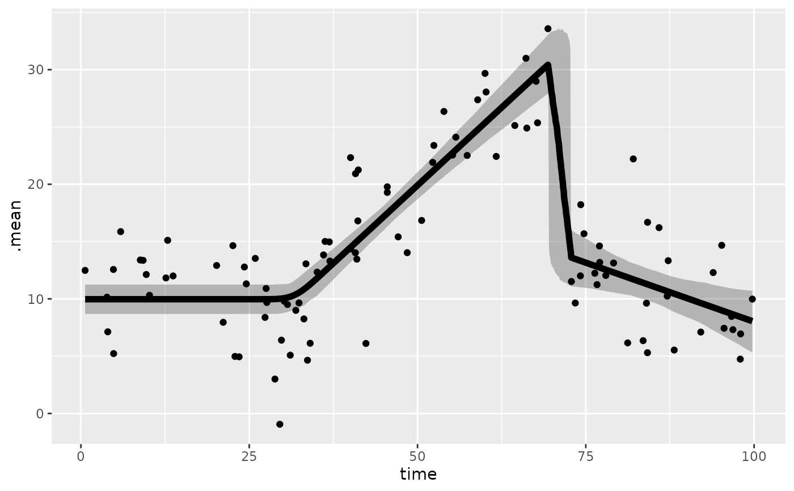

Returns a tibble with all combos of predictors
Source:R/interpolate_newdata.R
interpolate_newdata.Rd![[Experimental]](figures/lifecycle-experimental.svg)
Arguments
- fit
An
mcpfitobject.- by
Character vector of categorical or group-level columns to evaluate separately. Categorical model predictors are always evaluated separately.
- x_values
Numeric vector of x-values to evaluate at.
- at
Named list setting additional continuous predictors to fixed values. They default to their observed means. Family response auxiliaries can also be supplied as explicit scalar design values; e.g.,
at = list(N = 20).- arma
How AR/MA terms will be evaluated (see
predict.mcpfit()). Defaults toTRUEwhen the fit includesar()orma()terms.TRUE: Preserve the observed rows and response history for conditional AR/MA evaluation.FALSE: Interpolate unconditional trends."replicate": Preserve the observed rows, because AR/MA terms depend on the previous rows.
- prior
Logical. Increase the resolution around the change points of the prior draws (
TRUE) instead of the posterior draws (FALSE, default).
Value
A tibble with
A column for the change-point variable (
par_x)All combinations of categorical predictor levels
Fixed values for additional continuous predictors
Details
This function synthesizes predictors for all combinations of predictor values.
It is used internally in plot.mcpfit() and may be useful if you want to
build your own custom plot.
The par_x variable will be interpolated with higher resolution around the
change points where the values can change abruptly, but lower resolution in
between to speed up the computation.
Categorical variables and requested grouping factors are combined factorially (all level combinations).
Additional continuous predictors are held at their observed means, or at values supplied through at.
Family-specific response auxiliaries are not interpolated. Supply binomial
trial counts as a scalar in at or use newdata for a varying design.
Likelihood weights are needed only when evaluating log_lik() and
therefore need not be supplied here.
Author
Jonas Kristoffer Lindeløv jonas@lindeloev.dk
Examples
# \donttest{
# Get predictors for a fit
newdata = interpolate_newdata(demo_fit)
# Fit summary
head(fitted(demo_fit, newdata))
#> # A tibble: 6 × 5
#> time .mean .sd .lower .upper
#> <dbl> <dbl> <dbl> <dbl> <dbl>
#> 1 0.619 9.97 0.665 8.68 11.2
#> 2 1.62 9.97 0.665 8.68 11.2
#> 3 2.62 9.97 0.665 8.68 11.2
#> 4 3.62 9.97 0.665 8.68 11.2
#> 5 4.62 9.97 0.665 8.68 11.2
#> 6 5.62 9.97 0.665 8.68 11.2
# Predictions for each draw
prediction = predict(demo_fit, newdata, summary = FALSE)
head(prediction)
#> # A tibble: 6 × 13
#> time .row .chain .iteration .draw cp_1 cp_2 Intercept_1 time_2 Intercept_3 time_3 sigma_1 .prediction
#> <dbl> <int> <int> <int> <int> <dbl> <dbl> <dbl> <dbl> <dbl> <dbl> <dbl> <dbl>
#> 1 0.619 1 1 1 1 31.9 71.0 8.95 0.584 13.9 -0.155 3.48 11.0
#> 2 0.619 1 1 2 2 31.7 71.4 9.87 0.566 15.8 -0.335 3.47 6.17
#> 3 0.619 1 1 3 3 32.1 70.5 11.4 0.526 12.6 -0.0956 4.02 15.4
#> 4 0.619 1 1 4 4 33.3 72.8 10.1 0.561 13.7 -0.174 3.98 1.88
#> 5 0.619 1 1 5 5 31.7 69.9 9.97 0.466 13.8 -0.158 4.65 18.1
#> 6 0.619 1 1 6 6 33.3 69.9 10.0 0.536 12.5 -0.140 3.98 4.23
# Custom plot
library(ggplot2)
plotdata = fitted(demo_fit, newdata) # `width = .95` by default
ggplot(plotdata, aes(x = time, y = .mean)) +
geom_ribbon(aes(ymin = .lower, ymax = .upper), alpha = 0.3) +
geom_line(lwd = 2) +
geom_point(aes(y = response), data = demo_fit$data)

# }